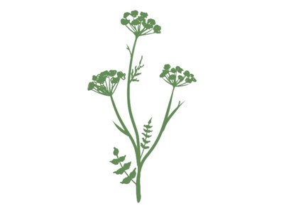
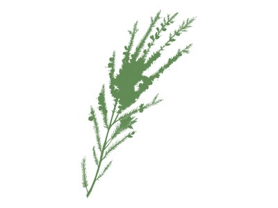
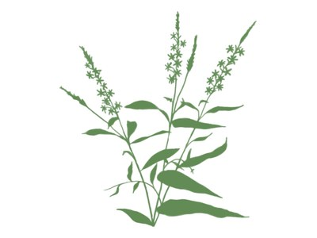
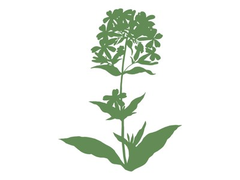
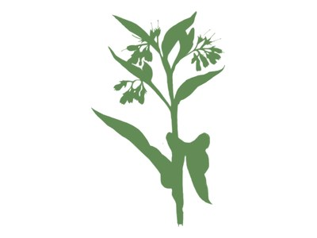

 Валериана лекарственная Растение влажных мест, известное в народной медицине как успокаивающее средство
 Вереск обыкновенный Вечнозелёный кустарник, растущий плотным ковром на сухих песчаных местах и торфяниках
 Дербенник иволистный Высокое растение влажных лугов, берегов рек и болот с пурпурными цветами
 Мыльнянка лекарственная Растение с корнем, который пенится в воде, и бело-розовыми цветками
 Окопник лекарственный Высокое растение влажных мест, известное в народной медицине благодаря корню